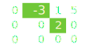

¿Que es una matriz escalonada reducida por filas?
En álgebra lineal una matriz se dice que es escalonada, escalonada por filas o que está en forma escalonada si:
- Si es matriz nula, es decir, todos sus elementos son cero.
- Todas las filas cero están en la parte inferior de la matriz.
- Las filas no nulas estan en escalera. Todas presentan a la izquierda del primer elemento distinto de cero(elemento pivote),mas ceros que la fila de arriba.
- Si en cada fila el pivote es el único elemento no nulo de su columna, se dice que es escalonada reducida por filas.
Ejemplos


¿Cómo se obtiene?
Para llegar a la reducida o escalonada por filas de una matriz A debemos:
- Destacar el elemento pivote de una fila no nula y usar operaciones elementales para hacer 0 el resto de elementos de esa columna.
- A la matriz resultante, destacar el elemento pivote de la siguiente fila y hacer el mismo procedimiento que hicimos con la fila anterior.
- Finalizaremos cuando esten todas las columnas en 0 menos el elemento pivote
- Si solo queremos que sea escalonada, aqui finalizaria el procedimiento. Si queremos reducirla al maximo, los elementos pivotes deben ser 1.